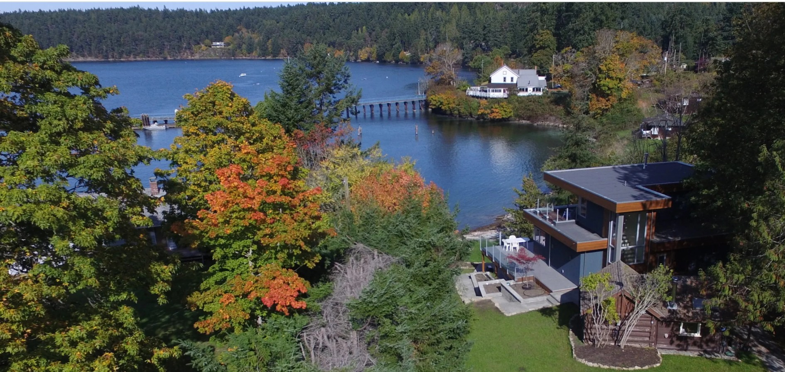

MayneWave
MayneWave
Walkable
Village services, the dock and waterfront are close at hand.
A quiet, independent cabin among mature trees, within an easy walk of the waterfront, village and Government Dock.
Discover the cabinMayneWave is designed as a calm base for two: somewhere to return after walking Historic Miners Bay, watching ferries on Active Pass, or exploring the rest of Mayne Island.
The cabin is deliberately understated. The setting does the talking.
Village services, the dock and waterfront are close at hand.
Your own quiet base, set apart and surrounded by trees.
Historic Miners Bay and Active Pass shape the entire stay.

This aerial photograph predates the cabin renovation and is used only to show the geography that has not changed: the cabin's close relationship to Historic Miners Bay, the waterfront and Active Pass.
Open the AtlasA comfortable space for reading, resting and planning the day.
A quiet bedroom intended for unhurried mornings and restful nights.
A practical kitchen for breakfast, simple meals and local ingredients.
Forest air, morning coffee and evenings after the waterfront walk.
Choose MayneWave for the privacy of the cabin and the rare walkability of its setting.
Check availability